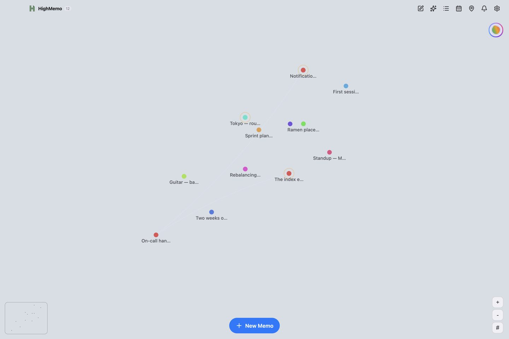

HighMemo for Mac
Every feature, where to find it, and what it needs before it works — including the four things the Mac app deliberately does not do.
Current interface
HighMemo on Mac, today
Use the graph, memo detail and searchable list together, then switch to Presentation View when one memo deserves your full attention. Choose Dark, Light or System in Appearance to carry the same workspace into your preferred theme.


HighMemo 1.1.0 for Apple Silicon and Intel Macs is available from the download section.
Contents
- Before you start
- Installing and first opening
- The window
- Writing a memo
- Getting things in
- The memo list, search and filters
- Opening a memo
- Tags, folders, pinning and people
- The graph view
- Documents
- AI Assistant
- Reminders on Mac — read this one
- Calendar
- Setting up AI, including Ollama
- The on-device search model
- Sync with your Google Drive
- Settings reference
- Export, import and reset
- Updates
- What Mac does not do
- Troubleshooting
1. Before you start #
There is no sign-up, no onboarding and no API key to paste. Open HighMemo and start typing. Nothing is connected on a fresh install, and your memos are kept in the app's own storage on your Mac.
What works with nothing connected
- Writing, editing and deleting memos, in a live Markdown editor
- Attaching images and files, including by pasting or dragging them in
- Tags, folders, pinning
- Searching and filtering
- The graph view
- Reading the text inside images
- Export and import
What needs something connected first
| Feature | What it needs |
|---|---|
| Titles, summaries, tags and categories written for you | An AI provider — a cloud key you own, or Ollama running on your Mac |
| AI Assistant | The same |
| Documents built from several memos | The same |
| Meaning-based search, and the Recommend list | The on-device search model — section 15 |
| The same memos on your phone | A Google account, connected in Settings |
| Your schedule beside your memos | Google Calendar, connected in Settings |
HighMemo shows ads on iPhone and Android. It does not on Mac. There is still no paid version — the Mac app simply has none.
Language
HighMemo's interface is in English only. What language the AI writes in is a separate setting — Settings → Display → AI Language.
2. Installing and first opening #
HighMemo for Mac comes as a disk image from this site, in two builds: one for Apple Silicon Macs (M1 and later) and one for Intel Macs. If you are unsure which you have, look at Apple menu → About This Mac. Open the disk image and drag HighMemo to your Applications folder.
Because HighMemo is distributed from this page rather than the Mac App Store, macOS checks it the first time you open it, which can take a moment longer than usual. If macOS refuses to open it, go to System Settings → Privacy & Security, scroll down to the message about HighMemo, and choose Open Anyway. You only ever have to do that once.
3. The window #
The Mac window is three columns rather than a stack of sheets:
- Left — the graph of your memos.
- Middle — whatever you are writing.
- Right — the memo list, the calendar, notifications or Settings, whichever you last opened.
The hairlines between the columns are draggable, so you can give the editor or the list more room. On a narrow window the columns collapse and panels slide over the graph instead, the way they do on a phone.
The toolbar
| Button | What it does |
|---|---|
| Pencil-in-square | New memo. Opens the editor in the middle column. |
| Sparkle | AI Assistant. With no AI set up it takes you to Settings instead. |
| List | The memo list on the right. |
| Calendar | The calendar on the right. |
| Map pin | Location Reminders — every memo with a place, on one map. |
| Bell, with a badge | The notification list. |
| Circular arrows | Sync now. Appears only once Google Drive sync is set up. |
| Gear | Settings. |
Clicking the HighMemo name at the top left clears whatever you had open. The count beside it is how many memos you have.
4. Writing a memo #
The Mac editor is the reason to use HighMemo on a Mac.
There is no edit-then-preview step and no split view. You type ## Heading and it becomes a heading; the ## reappears only while your cursor is on that line, so you can correct it. Checkboxes are real checkboxes you can click. Images show inline.
A title field sits above the body. Click Save, or press ⌘Return. Saving does not wait for anything: the memo is stored the moment you save it, and any AI work happens afterwards in the background. If that work fails, nothing you already wrote is changed.
Formatting
A row of buttons above the editor covers bold, italic, strikethrough, inline code, three heading levels, bullet and numbered lists, task lists, quotes, code blocks, a divider, today's date, links and images. Or use the keyboard:
| Keys | Does |
|---|---|
| ⌘B | Bold |
| ⌘I | Italic |
| ⌘K | Link |
| ⌘⇧C | Code block |
| ⌘Return | Save |
| Return in a list | Continues the list. An empty item ends it. |
| Tab inside a code block | Indents |
| Esc | Closes the open memo |
| ← → | Steps through your memos while one is open |
Pasting and dragging
- Paste an image and it becomes an attachment, with a reference inserted where your cursor was.
- Drag files onto the window and the editor opens by itself with them attached. An overlay reads Drop files here.
- Drag a calendar event from the calendar panel into the editor and it becomes a mention of that event.
- Paste a link as plain text and it is recognised as a link when you save; HighMemo then fetches the page. This is how you bring web pages in on a Mac — there is no share menu.
Attachments and text inside images
Attachments appear as thumbnails; click one to insert an inline reference, or its × to remove it. Text inside an image is read using macOS's own text recognition and becomes material for the memo's tags and summary. The recognition itself happens on your Mac; what it finds is then material like any other, so it goes to whichever AI provider you connected in section 14.
Mentioning another memo or a person
Type @ and suggestions appear: people, your memos, and — if the calendar is connected — your events. Pick one and it becomes a link inside the text.
For a memo you mention, the link is add-only: deleting the mention from the text does not delete the link, and no automatic rebuild ever removes it. A person works the other way round — there the text is the record, so removing @name from the body removes that person's link to the memo.
Drafts
An unfinished new memo is kept: after a few seconds without typing, Draft saved appears. The amber clock icon brings it back later.
5. Getting things in #
Mac has no system share sheet into HighMemo, so the routes in are:
- Paste a link into a new memo. HighMemo fetches the page and fills in its title, its description as the summary, and its preview image as a thumbnail. Pages that publish none of that still become a memo, with a title taken from the page's own content and no thumbnail.
- Drag files onto the window.
- Paste images straight into the editor.
- Sync — anything you shared into HighMemo on your phone appears here once sync has run.
On a Mac, HighMemo fetches pages itself rather than through the browser's restrictions, so pages that resist being read elsewhere often work here.
Pages whose content is inside pictures
On iPhone and Mac, HighMemo reads the text in a link's images using the system text recognition, and uses it to write the tags, title and summary. Those images are never added to your memo and never uploaded. On Mac the image is never written to disk at all — it is read straight into memory and handed to the text recogniser.
The recognised text is not stored either. What stays on the memo is what was written from it — the tags, the title and the summary — and if you have turned sync on, those travel to your Drive with the rest of the memo.
This is not the same on every platform:
| Text inside a link's pictures | How | |
|---|---|---|
| Mac | read | macOS's own text recognition. Nothing to set up. |
| iPhone and iPad | read | iOS's own text recognition. Nothing to set up. |
| Android | not read | HighMemo has no text-recognition engine on Android — see the Android guide, section 3. |
6. The memo list, search and filters #
Search
The field's placeholder is its syntax: keyword, #tag, @person.
| You type | You get |
|---|---|
| Plain words | Memos whose title, body or tags contain what you typed, anywhere inside them. Case does not matter. |
#tag | Only memos carrying exactly that tag. |
@name | Only memos linked to exactly that person. |
Every memo is searched. Once the on-device search model is ready, meaning-based matches are added to these results — nothing is taken away. Meaning-based matching applies to plain words only, not to #tag or @name.
Chips, filters and sorting
All, Pinned, Memos, Links, Documents and Reminders, each with a live count, then chips for the tags you use most. Filter opens Folders, Collections (your shortlist of tags — long-press or right-click a tag to pin it there) and People. Results update as you click; there is no Apply button. Sorting offers Pinned First, Newest and Updated.
Selecting several memos
Select, tick memos, then Delete or Create Document (section 10).
7. Opening a memo #
Click a memo in the list or on the graph. The arrow keys step through your memos; Esc closes.
The action row
| Icon | What it does |
|---|---|
| Wand (purple) | Runs the AI over this memo again. Needs an AI provider. If it fails, your existing title, summary and tags are kept. |
| Map pin | Attaches or changes a place — but see section 12 before relying on it. |
| Clock (amber) | Attaches or changes a time reminder — likewise. |
| Pencil | Edits the memo. |
| Share | Copies the memo — title, body, tags and link — to the clipboard. |
| Trash (red) | Deletes the memo, after confirming. |
The sections down the page
- Folder chip, reminder chip, and any linked calendar events.
- Summary — written by the AI. Absent until an AI provider has processed the memo.
- The body — rendered Markdown. Click a checkbox to tick it. Clicking a link follows it; a single click elsewhere opens the editor.
- Attachments — click an image to open it full screen, with arrows and trackpad gestures to move and zoom, and a Download button. Files can be opened in their usual app.
- Created / Updated.
- Tags — click a chip to see everything carrying it, or Add one.
- Related — the memos you linked, including anything you brought in with
@. On a document this is Sources: the memos the AI reads when it writes it. - Recommend — memos that look similar, from the on-device search model. Empty until that model is ready. Suggestions, not links.
- Auto-collect related memos — on a document only.
AI actions on one memo
The small circular button at the end of the title row opens Ask AI, Enhance, Summarize, Translate and Action items. Each needs an AI provider.
8. Tags, folders, pinning and people #
All four work with no account and no AI.
Tags arrive two ways: the AI adds them when it processes a memo, and you add them yourself with Add in the detail view. A tag is identified by its name, so a hand-typed tag and an AI tag with the same word are the same tag. Bulk cleanup is in Settings → Data & Storage → Tag Manager.
Folders are created in the Filter panel or from a memo's folder chip. A memo lives in one folder at a time, and folders do not nest. Collections is your pinned shortlist of tags. People come from @ mentions and are their own filter axis.
With no AI provider configured, HighMemo falls back to picking words out of your text itself. On Mac it does that with proper word analysis for Korean, Japanese, Chinese and several European languages, which the mobile apps cannot carry. So a Mac with no AI at all still produces reasonable tags.
9. The graph view #
Each dot is a memo. Memos that share a tag gather together, and the tag's name sits at the centre of the group. That grouping needs no AI, no account and no model — tags are enough. Memos that share no tag with anything collect under Uncategorized.
Lines are drawn between memos as well, and only where you made the link yourself — with Related, or by mentioning one memo inside another using @. Nothing HighMemo worked out on its own is drawn as a line. On iPhone and Android no lines are drawn at all: on a phone-sized canvas that is a deliberate trade for speed, so the graph there shows the tag groups instead.

To see what a particular memo is connected to, open it and read Related (the links you made) and Recommend (similar memos).
Controls
- Drag to move. Scroll or pinch on the trackpad to zoom.
- + and − buttons zoom; the # button switches between tag groups and individual memos.
- Click a dot to open that memo. Click a tag name to filter to it — a pill appears showing the tag, with an × to clear it.
What you see as you zoom
Zoomed out you see tag names, not memos — the busiest groups first, then more as you zoom in. Past a certain point the tag names give way to the memos themselves, then to their titles, then to their thumbnails. Exactly one of the two is on screen at a time.
Dot colour follows the memo's category. A dashed pulsing ring means the AI has not finished with it yet.
10. Documents #
A document is a memo written from other memos.
- Open the memo list and click Select.
- Tick the memos you want to draw from.
- Click Create Document.
- Answer What kind of document should these memos become? — for instance Weekly summary or Meeting notes — and click Create.
What you type decides the shape of the result, not just its title: ask for a weekly report and you get one organised by date; ask for a comparison and you get a table. The document is saved immediately and filled in behind you — Drafting document… then Document is ready!, which also arrives as a macOS notification so you can go and do something else.
+ beside Sources adds more memos later and rewrites the document with them; if you have edited it by hand, HighMemo warns you first. Auto-collect related memos makes the document offer to take in related memos as you write them.
With no AI provider you can still make one: your chosen memos gathered under headings, a tidy collection rather than a piece of writing.
11. AI Assistant #
The sparkle in the toolbar. It answers from your own memos and needs an AI provider — with Text Rules Only selected, clicking it takes you to Settings.
Type into Ask about your memos…, or use a preset. They change depending on whether a memo is in context:
| With no memo in context | With a memo in context |
|---|---|
| For today | About this memo |
| Recent trends — the last two weeks | Find related |
| Knowledge gaps — the last month | Enhance |
| Weekly summary — the last seven days | Action items |
| Random connection — three memos at random |
Memos the answer drew on appear as chips you can click to open, and tags as chips that filter the list. Under each answer: Copy, Save as Memo, Append to memo (checklists arrive as real checkboxes) and Translate. While an answer is streaming, the send button becomes a stop button.
The panel carries the line AI can make mistakes. Double-check important info.
If Google Calendar is connected, the titles of today's and tomorrow's events are included in what the assistant is told. That means those titles go to whichever AI provider you configured.
12. Reminders on Mac — read this one #
Reminder notifications are delivered on iPhone and Android. The Mac app can store a reminder on a memo, show it in the calendar, and list it under Reminders — but it does not schedule it with macOS, so nothing pops up when the time comes. If you use HighMemo on a phone as well and have sync on, the same reminder does alert you there. If Mac is your only device, treat reminders as dated memos rather than as alarms.
What the Mac app does do
- Sets and shows reminders. Open a memo, click the clock icon, and choose In 1 hour, In 3 hours, Tomorrow morning, Next Monday, Custom… (a date and time picker), or Repeat with No repeat, Daily, Weekly or Monthly. Clear reminder removes it.
- Lists them. The calendar shows them on their day and the bell lists what is due, so a glance still tells you what is coming.
- Tells you when work finishes. The Mac app does post macOS notifications for things that just happened — a memo finished being organised, a document finished being written. Clicking one brings the window forward. macOS asks permission the first time.
Location reminders on Mac
You can attach a place to a memo — click the map pin, search or click the map, set a radius. But arrival is only noticed while HighMemo is open, and it is checked periodically rather than the instant you cross the line, because a Mac app cannot ask macOS to watch a place in the background the way a phone can. On a laptop that travels with you it will sometimes work; do not depend on it. The map pin in the toolbar shows all your placed memos on one map, which is the more useful half of the feature here.
13. Calendar #
The calendar icon opens a month grid on the right. Days with something on them carry a dot; click a day to see it below. Today jumps back. Your own reminders show here whether or not you connect anything.
Connecting Google Calendar
Go to Settings → Sync & Services, connect Google (see section 16), then use Connect Calendar. Your calendars appear grouped by account, each with a checkbox. Add Calendar Account adds a second Google account for calendar only.
Access is read-only. HighMemo never creates, edits or deletes an event. Events cover about a month back and three months ahead, refresh roughly every 30 minutes while the app is open, and Sync Now forces it.
Moving between months is not stopped at the edges of the fetched window, so you can page into months HighMemo has not asked Google about. Those months show nothing, which looks the same as a month with nothing in it. If a month more than three ahead, or more than one behind, comes up blank, that is the window rather than your calendar. Your own memo reminders are stored on this Mac and show in any month.
There is also a ceiling of 2,500 events per fetch. Inside a four-month window you are unlikely ever to meet it.
Events and memos together
- Add memo, under an event, starts a memo already attached to it. You do not have to expand the row first — the button is there on every Google event.
- Drag an event into the editor to mention it in what you are writing. This is a Mac-only shortcut.
- When you save a memo, HighMemo suggests an event that looks related, with a Link button. Nothing is linked unless you click it.
14. Setting up AI, including Ollama #
Two routes on Mac, and you can also take none.
Route 1 — a cloud provider, with your own key
Settings → Cloud AI Providers, click a provider, paste the API key of an account you already have. Get API key → opens the right page if you do not have one. Saving a key selects that provider and its default model; Change under MODEL picks another.
| Provider | Default model |
|---|---|
| Groq (Free) | Llama 3.1 8B Instant |
| Google Gemini | Gemini 2.5 Flash Lite |
| OpenAI | GPT-5 nano |
| Anthropic Claude | Claude Haiku 4.5 |
| Mistral | Mistral Small |
| Perplexity | Sonar |
| Alibaba Qwen | Qwen Plus |
Requests go from your Mac straight to the provider you chose, under your key. Your key is stored on your Mac and is not included in anything HighMemo syncs.
Route 2 — Ollama, running on your Mac
The Mac app has no model list to download from — that exists only on phones. Instead it talks to Ollama, which you set up yourself. Nothing works until you have.
- Install Ollama from ollama.com and open it, so it is running and listening on your Mac's own address (port 11434). If you prefer the terminal,
ollama serve. - Pull a model, for example
ollama pull gemma3. Until at least one model is present HighMemo has nothing to use, and will tell you so. - In HighMemo, open Settings → Local AI → Desktop CLI Tools. Click Check Status. When the dot next to Ollama turns green, click Use.
HighMemo then uses the first model Ollama is serving. There is no model picker on the HighMemo side — the choice is which models you pull and keep. With Ollama answering, your memo text is processed on your own Mac and does not leave it.
The same panel also reports whether LM Studio and llama.cpp are listening, and whether the Claude Code, OpenAI Codex, Gemini CLI and Aider command-line tools are installed, with the command to install each one if not. It is a status board for what your Mac has available; the local engine HighMemo actually routes its own work through is Ollama.
Route 3 — no AI
Settings → Local AI → Text Rules Only (no AI). Memos still get a title, a short summary and tags derived from their own text — on Mac, with the proper word analysis described in section 8.
What the AI produces
Once a provider is connected, every memo you save comes back — a few seconds later, in the background — with a title, a summary, tags and a category. The category is what colours the memo's dot on the graph. If the AI fails, your existing title, summary and tags are kept rather than replaced, and a message tells you it failed.
The AI is asked to pick a category. The value is stored as it comes back, and the graph has colours for 15 of them — anything else takes a default colour. That is why an occasional dot is grey while its neighbours are not. It is worth knowing here in particular: a small local model through Ollama is the most likely thing to answer with something off the list.
The categories with no colour of their own are kids, camping, fashion, pet, art and other.
What language the AI writes in
Settings → Display → AI Language. Auto is the default and follows the memo. Fourteen languages can be chosen explicitly. This affects AI output only — the interface stays in English.
15. The on-device search model #
Separate from section 14, and much smaller. This model turns your memos into vectors so HighMemo can find things by meaning rather than by matching letters. It powers meaning-based search results and the Recommend list. It runs on your Mac whichever AI provider you use, and the vectors it produces are not sent anywhere.
On Mac the model's files are fetched the first time they are needed and then kept, so the first meaning-based search after installing does a one-off download and later ones do not.
Checking on it, and controlling it
Settings → Local AI → Semantic Search Model. The Embedding Model row says which state it is in — Ready — semantic search enabled, Downloading… n%, or Not downloaded — using keyword search — with a Download button when it is missing.
There is no on/off switch for meaning-based search. It works when the model is ready and does not when it is not; until then, search matches letters.
The semantic index
Semantic Index below it reports how many memos have been indexed. It happens on its own once the model is ready, but Index n or Build processes what is outstanding, Rebuild starts over, and Stop halts a run. These are greyed out until the model is ready. Because a Mac has power and a big screen, this is the natural place to run a full Rebuild for a large collection rather than doing it on a phone.
16. Sync with your Google Drive #
Connect a Google account and your Mac and phone see the same memos. They are stored in your own Google Drive app-data folder — a private per-app area of your Drive. There is no HighMemo server and no HighMemo account, so nobody at HighMemo can look at them. Images and attachments travel too.
Turning it on
- Settings → Sync & Services → Cloud Sync and choose Google.
- Click Connect Google. Your browser opens for the sign-in and hands the result back to HighMemo.
Connecting sync requests app-data folder access and read-only calendar access in the same consent screen. There is no way to grant only one. If you want sync but not the calendar, simply do not connect the calendar afterwards — HighMemo will not read your events until you do.
When it runs
When you open the app, and every 5 minutes while it is open. The toolbar's circular-arrows button and Sync Now in Settings both run it at once. There is no background sync while the app is closed, and no interval to configure.
That 5-minute cycle exists only while Drive sync is actually set up and signed in. If it is not — no provider chosen, or the sign-in has expired — nothing is scheduled at all, rather than running slowly in the background. So a stale Last sync means "check that it is still connected", not "wait longer".
Sync never pulls into an editor you have open, so it cannot overwrite what you are typing.
What happens when two devices disagree
The newer edit of a memo wins; you do not get a merge conflict to resolve. Nothing is deleted by syncing — a deletion travels only when you actually deleted something.
Turning it off, and deleting what was uploaded
Disconnect stops all uploads and signs the account out. That does not delete the copy already in your Drive. To remove that, revoke HighMemo in your Google Account permissions — which deletes the app-data folder.
17. Settings reference #
The gear icon. On a wide window Settings docks into the right column rather than covering the app.
| Section | Contains |
|---|---|
| Appearance | Dark / Light / System |
| Cloud AI Providers | The seven providers, their keys and models |
| Local AI | Semantic Search Model and the semantic index; Desktop CLI Tools (Ollama and friends); Text Rules Only (no AI) |
| Sync & Services | Cloud Sync and, once Google is connected, Calendar (read-only) |
| Display | AI Language |
| Data & Storage | Counts, Tag Manager, Export data, Import data, Reset All Data |
| About | Version, Open Source Licenses, and a link to the privacy policy |
- No sync passphrase. There is no encryption control in the app.
- No switch for meaning-based search. It follows the model's state.
- No downloadable chat models. On Mac, local AI means Ollama.
- No ad settings, because the Mac app has no ads.
- No sync interval, and no update button — see section 19.
18. Export, import and reset #
Export
Settings → Data & Storage → Export data downloads a single JSON file named HighMemo-backup-date-time.json. It contains memos, tags, folders and links, with your images carried inside it.
Two things are not embedded: thumbnails that came from a web page stay as the address they came from, and any image that lives only in your Drive copy stays as a reference to it. And a backup is your content, not your configuration — API keys, your chosen provider, language and appearance are not in it.
There is no Markdown or PDF export. JSON is the only format.
Import
Import data reads a backup back in and merges it. Nothing is deleted, matching items update to the newer version, and re-importing the same file does not create duplicates.
Reset All Data
Deletes every memo, tag, folder and link on this Mac and in your Drive copy including uploaded images. A confirmation card appears first. It deliberately keeps your settings, API keys, Google connection, language and appearance.
19. Updates #
HighMemo for Mac keeps itself up to date. It checks for a new version when it starts and every few hours after that, downloads one quietly in the background, and puts it in place the next time you quit and reopen the app.
There is no update button and no prompt. That is deliberate: this is an app people leave open for days, and an update dialog in the middle of a sentence — or a forced restart — is worse than a quiet swap on the next launch. If you want to be sure you are current, quit HighMemo and open it again.
The check goes to GitHub, where the releases are published. If your Mac is offline it fails silently and the app starts normally.
20. What Mac does not do #
| Feature | Mac | Phone |
|---|---|---|
| Live Markdown editor | yes | edit and preview |
| Reading text inside images | yes | iPhone yes · Android not at all in links |
| Paste and drag files in | yes | no |
| Drag a calendar event into a memo | yes | no |
| Word analysis for tags without AI | yes | simpler |
| Sharing into the app from other apps | no — paste or drag | yes |
| Reminder notifications | no | yes |
| Arrival at a place, while closed | no | yes |
| Voice dictation | no | yes |
| Downloadable on-device chat models | no — Ollama instead | yes, on capable devices |
| Ads | none | yes |
21. Troubleshooting #
| What you see | Why, and what to do |
|---|---|
| macOS will not open the app | It came from outside the App Store. System Settings → Privacy & Security → Open Anyway. Section 2. |
| A reminder you set never alerted you | Expected on Mac. Section 12. |
| Ollama shows a red dot | It is not running, or not on the usual address. Open the Ollama app, or run ollama serve, then Check Status. |
| Ollama is green but nothing happens | No model is pulled. Run ollama pull gemma3 (or any model) and try again. |
| Memos have no summary, tags or category | No AI provider is connected. Section 14. Existing memos get them from the wand icon. |
| Recommend is always empty | The search model is not ready. Check Settings → Local AI → Semantic Search Model. Related is separate and only ever holds links you made yourself. |
| Your Mac and phone disagree | Sync runs on open and every 5 minutes while open. Run it on both. A sync will not pull into an editor you have open — close it first. |
| Sync says the session expired | Disconnect then Connect Google again. |
| A memo shows a dashed ring on the graph | The AI has not finished with it. It goes away by itself. |
| You are not sure the app is current | Quit it and open it again; a downloaded update installs on quit. Section 19. |
Anything else: highgarden0@gmail.com.